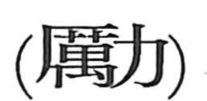

励

Kun: hagemu, hagemasu | On: rei
to encourage ・ to strive ・ to exert oneself
Explanation
励 is a phono-semantic character whose original form is 勵. There, 厲 serves as the phonetic element giving the on-reading rei. 厲 itself combines 厂, the contour of a cliff, with 萬, understood here as a scorpion-like insect, evoking a ritual performed at a sacred place beneath a cliff—an image that carries connotations of intensity and severity. When this is paired with 力, which Shirakawa interprets as the form of a plow, the character points to the strenuous labor of turning fields and rice paddies. From this blend of intensive force and plowing effort arises the meanings “to strive, make efforts” and, by extension, “to encourage.”